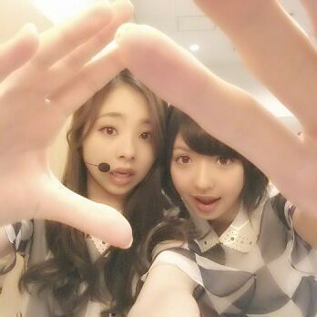

はぁーーーい＼(^o^)／
Rotty☆だよ〜
皆さん 元気かなぁ？？
元気な方もちょっと元気ないって方にも
もっと元気になってもらえる様
ろってぃ-ちゃんは、皆に
魔法をかけちゃうぞ (о´∀`о)
え ？ キャラ変 笑？？
ごめんなちゃいませ。
ってな感じで おいシャン
〜ろってぃ- & まいやん〜
まいやん大好きやねん\(・ω・)/
そしてそして
大阪に引き続き 名古屋でのlive☆★☆
ほんっっとうに、
ありがとうございましたっ！！！
名古屋の皆さんの人柄が
なんだか伝わってきました(о´∀`о)
自分もおもいっきり楽しんで、
来て頂いた方ファンの皆さんにも
めっちゃ盛り上がってもらい
楽しんでもらいたいっ☆！！
って思ってたのを実現することができ
嬉しい限りであります。ニコッ☆
名古屋まで足を運んでくださった
皆さん 本当にありがとうございました！
ヘアスタイルは ミツ編みだよ。
どうかなぁ♪？
明日は 最終 ωωω、
とうとう 東京公演です //
乃木坂全員 全力でやりきります！
ほんっっまに、 頑張るから
見ててくださいっ＼(^o^)／

名古屋での夜公演。
かずみんは足を痛めたせいで
一部の曲しか出れませんでした。
本人は 本番直前まで
出たい 出たい と言っていました(´ゞ`)
かずみん悔しかったんやろう思う‥
でも 足以外は
いつもの かずみんだよ(*^^*)
足もだいぶ良くなったみたいだから
安心してやってくだちー♪
まあ、まひろより
２年多く生きてるだけあって
なかなか頼りがいのある方だよ
かずみんはねっ( ☆∀☆)
明日 東京公演でばんかいできるよ )))
うっ 、、、 いぇーーーい＼(^o^)／
ではでは 東京よろちくです！！！
早起きしなきゃやから
そろそろだねー ☆
おやすみなさい...\(・▽・)/のし